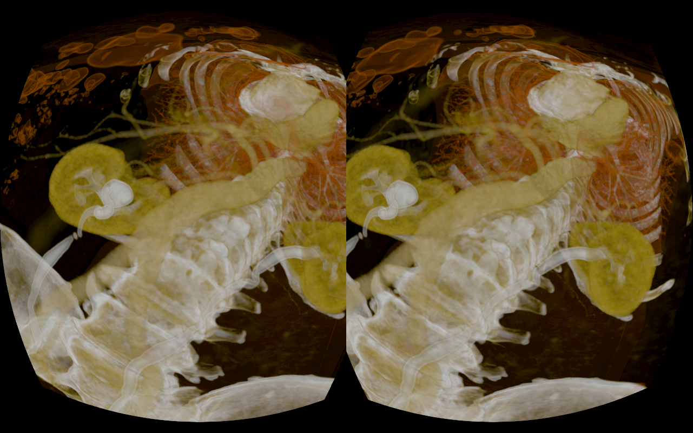

VR Exploration
Overview
In my thesis I worked on creating a framework that would add support for Oculus Rift and Leap Motion into existing 3D Rendering applications.
It was integrated into the project of my supervisor which can be found here.
The user is able to move and rotate the datasets using both hands by grabbing them. I also performed user testing to compare my interaction method to the more traditional mouse and keyboard input scheme.
Details
Concept
The idea was that the user could look around using the Oculus Rift. Depending on the dataset loaded we wanted to create different experiences. For example, for the visualization of the millennium run project the user should be inside a huge volume. For others like the visual human project the data set should have approximately real life size.
For the interaction with the data we wanted to create an intuitive and natural way to manipulate the datasets using the Leap Motion.
Application
I first started with integrating oculus rift support into the application. This proved to be harder than expected because the rendering had to be changed to create the images correctly. It was especially important to have the same level of detail for both eyes. Because the performed raytracing was dependent on the eye position we had the problem that the images would be correctly positioned to be perceived as 3D but were slightly different. To prevent this some parts of the rendering process were performed with a centered positon between both eyes.
Another problem we faced I faced was the general performance. Especially for the larger datasets like the millennium run the performance was around fifteen fps. Fortunately it was possible to reduce the quality of rendering quite a bit before it was noticeable to the user. This was mainly due to the abstract visualization where faults would not be noticeable.
For the interaction with the Leap Motion I tested different versions. The one which we decided on in the end was to grab the data sets with one hand and rotate them with both. This turned out to be the most robust version. Others which used more specialized gestures had the problem that the Leap Motion data was not consistent enough to create a good experience.
Both the SDKs for Leap Motion and Oculus Rift were still heavily in development during the thesis. Some of the changes to the SDKs were a huge improvement especially the new hand models for the Leap Motion. However, it also resulted in a lot of code for the abstraction of the Oculus Rift which became obsolete after the newest SDK was released.
User Testing
After the implementation I decide with my supervisor to conduct a series of user test to see how good the Leap Motion and Oculus Rift performed. We especially choose people without much or any experience with virtual reality. This was quite important because I had become quite resistant to motion sickness while debugging my application. The test consisted of two parts with Oculus Rift. In one the participant used the mouse and keyboard to navigate. In the other the Leap Motion was used. The tests were performed in different order for each participant to prevent the Oculus Rift influencing the results. Each participant had to perform the same task which was to navigate through the visual human dataset.